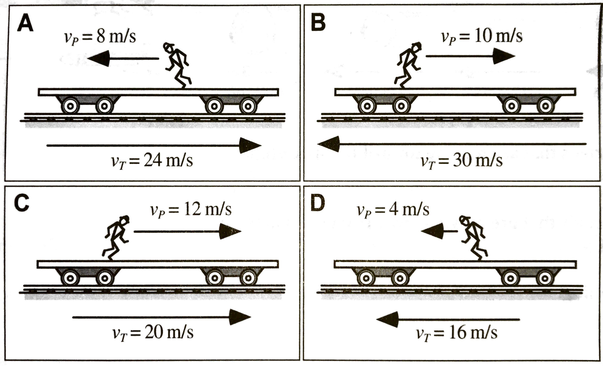
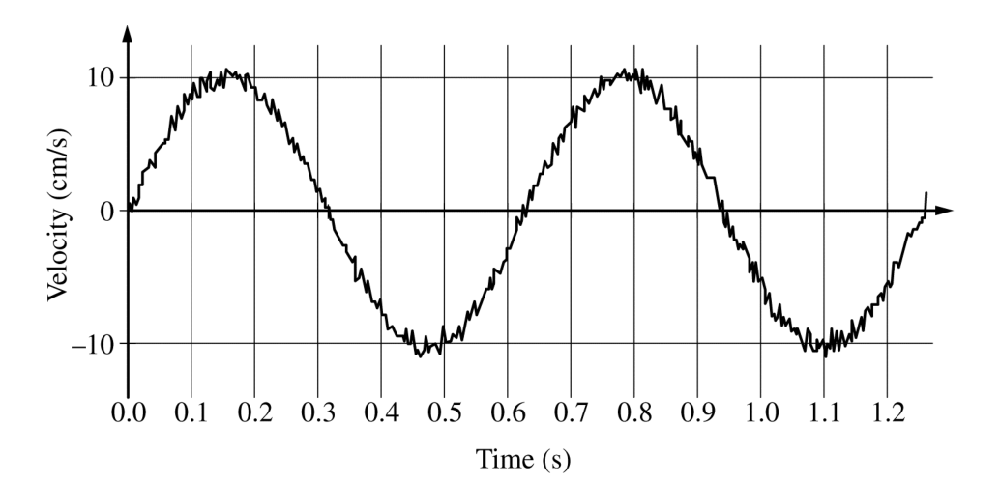
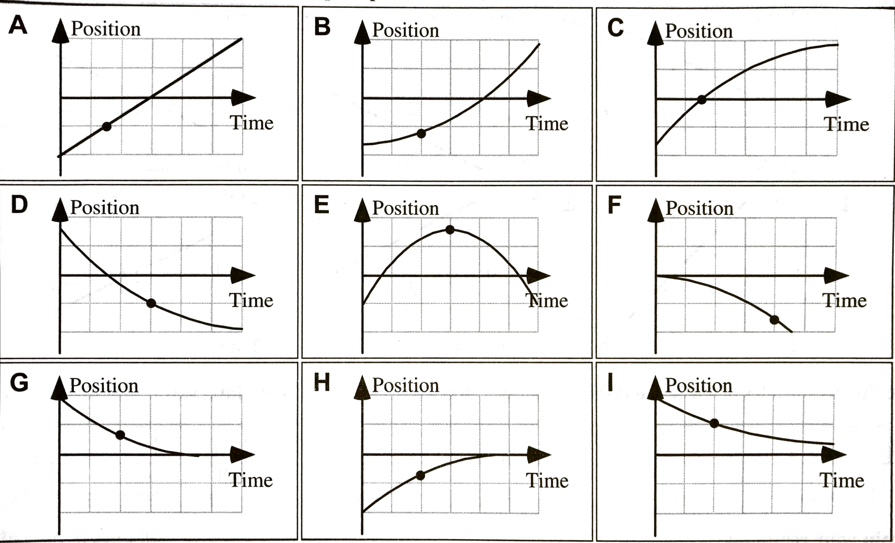
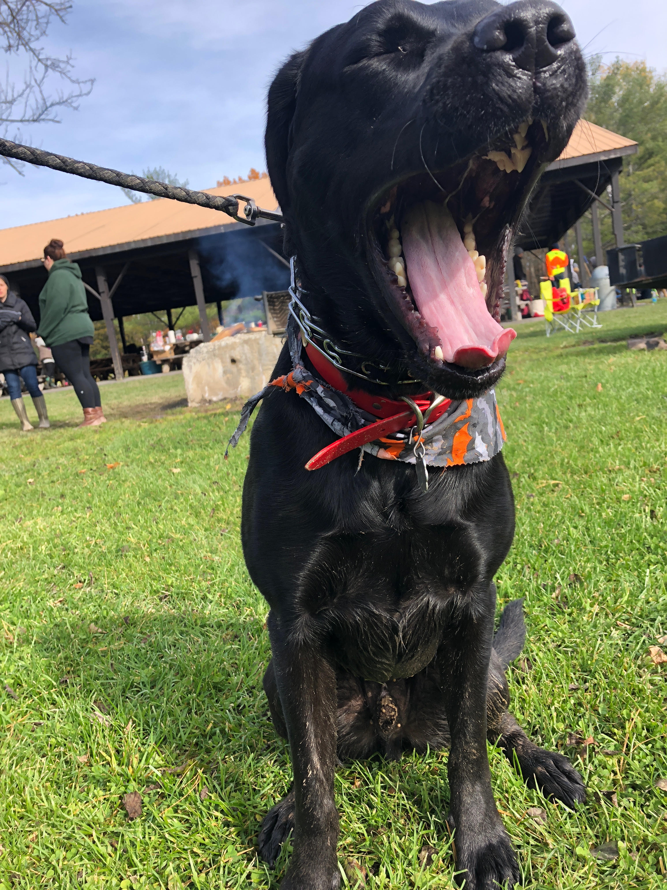
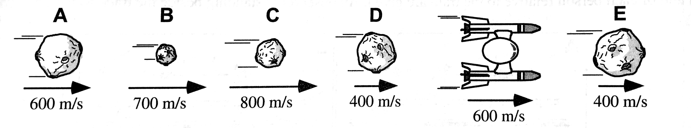
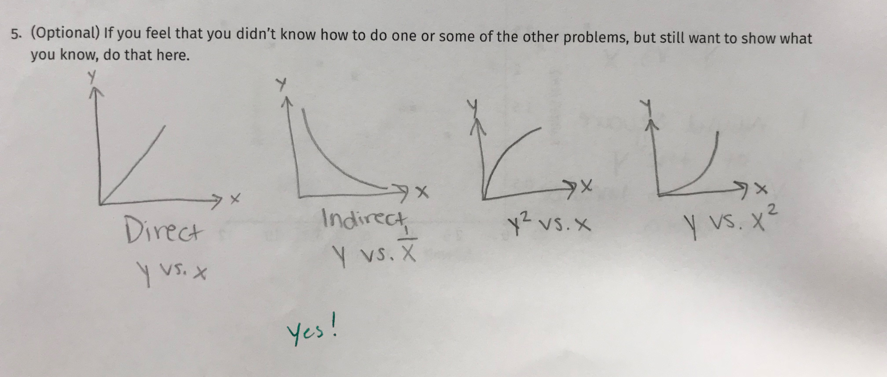
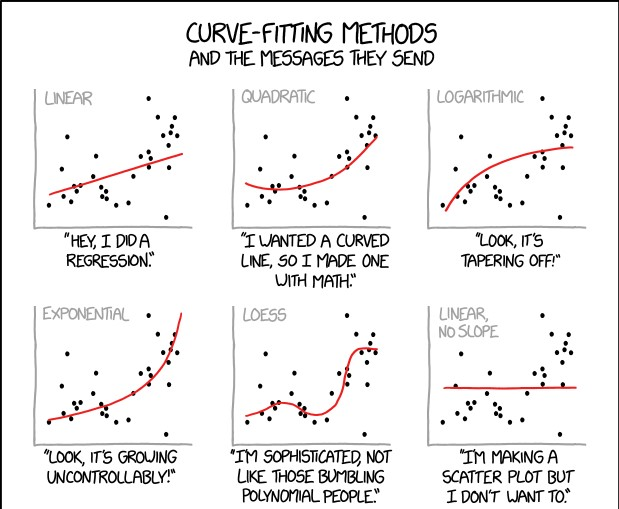
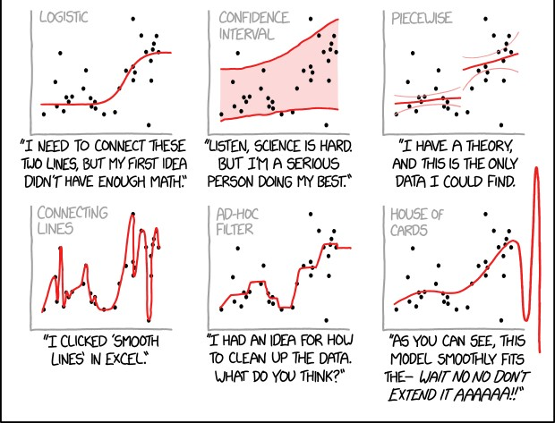
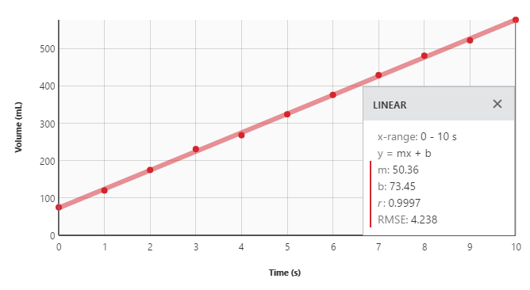
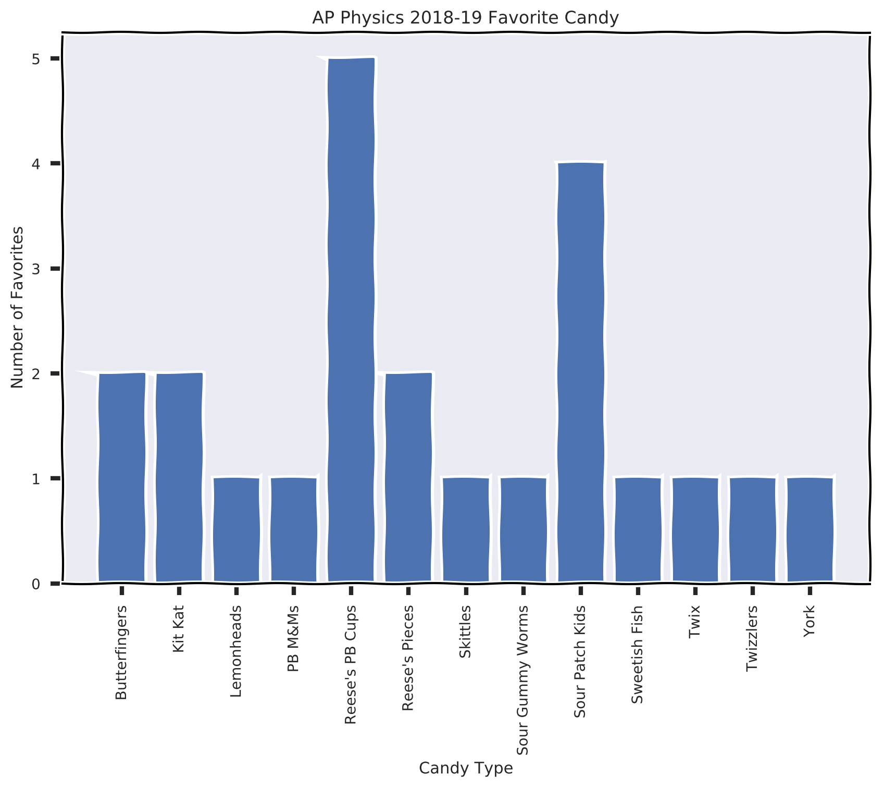

class: center, middle, inverse # AP Physics Daily Plans 2018-2019 ### *"Learning happens when you think hard"* ### *Make that Myelin* ### **Mastery Mindset** ### **\#ImpactLearning** --- #2018.11.07 AP Physics 1. Do Now Questions 2. Review Problem Solving with Graphs - Gallery Walk 3. Problem Solving with equations 4. Problems 11 and 12 Coming Up: - Tuesday - group work challenge problem - Wednesday - AP Review Questions (from review packet) - Friday - Exam - 20 MC, 2 FRQs one experimental design question. --- In each case shown, someone is running on a flatbed train car as the train moves. In cases C and D, the person is running toward the front of the train, while in cases A and B the person is running toward the rear. The speeds of the train and of each person relative to the train are given. An observer is standing beside the track watching each train go by. .center[] **Rank the *speed* of the runners relative to the observer standing beside the tracks.** **A.** (C>A>B=D) **B.** (C > B = A > A) **C.** (B>A>C>D) **D.** (C>B>A>D) --- .center[] A student sets an object attached to a spring into oscillatory motion and uses a motion detector to record the velocity of the object as a function of time. A portion of the recorded data is shown in the figure above. The total change in the object's speed between 1.0 and 1.1 s is most nearly **A.** zero **B.** 5 cm/s **C.** 10 cm /s **D.** 15 cm/s --- .center[] A student sets an object attached to a spring into oscillatory motion and uses a motion dector to record the velocity of the object as a function of time. A portion of the recorded data is shown in the figure above. The acceleration at time `\(t = 0.7\)` s is most nearly equal to which of the following? - A. The value of the graph where it crosses 0.7 s grid line - B. The slope of hte line connecting the origin and the point where the graph crosses the 0.7 s grid line - C. The area under the curve between where the graph crosses the time axis near 0.63 s and time 0.7 s - D. The slope of the tangent to a best-fit sinusoidal curve at 0.7 s --- Position versus time graphs for boats traveling along a narrow channel are shown below. The scales on both axes are the same for all of these graphs. In each graph, a point is marked with a dot. .center[] **For which of these cases, if any, is the <u>position zero</u> at the indicated point?** --- Position versus time graphs for boats traveling along a narrow channel are shown below. The scales on both axes are the same for all of these graphs. In each graph, a point is marked with a dot. .center[] **For which of these cases, if any, is the <u>position negative</u> at the indicated point?** --- Position versus time graphs for boats traveling along a narrow channel are shown below. The scales on both axes are the same for all of these graphs. In each graph, a point is marked with a dot. .center[] **For which of these cases, if any, is the <u>velocity zero</u> at the indicated point?** --- Position versus time graphs for boats traveling along a narrow channel are shown below. The scales on both axes are the same for all of these graphs. In each graph, a point is marked with a dot. .center[] **For which of these cases, if any, is the <u>velocity negative</u> at the indicated point?** --- Position versus time graphs for boats traveling along a narrow channel are shown below. The scales on both axes are the same for all of these graphs. In each graph, a point is marked with a dot. .center[] **For which of these cases, if any, is the <u>acceleration zero</u> at the indicated point?** --- Position versus time graphs for boats traveling along a narrow channel are shown below. The scales on both axes are the same for all of these graphs. In each graph, a point is marked with a dot. .center[] **For which of these cases, if any, is the <u>acceleration negative</u> at the indicated point?** --- #2018.11.06 AP Physics 1. Quiz 2. Go Over Quiz 2. Finish up to \#10 for Problem Solving 3. The *Kinematic Equations*: - `\(x = x_0 + v_{x0}t+ \frac{1}{2}a_xt^2\)` - `\(v_x = v_{x0} + a_xt\)` - `\(v^2 = v_0^2 + 2a(x-x_0)\)` 4. Solve \#11 and \#12 in Problem Solving --- #2018.11.05 - AP Physics .left-column[  ] .right-column[ 1. VT Graph Do Now, aka "practice quiz" 2. Word Problems with VT Graphs - complete unfinished for HW **Quiz Tomorrow**: - CVPM 2. I can make predictions about a system based on the fact that velocity is equal to the change in position per unit time. - CAPM 1. I can express the motion of an object with constant acceleration using narrative, mathematical, and graphical representations. - CAPM 3. I can create mathematical models and analyze graphical relationships for acceleration, velocity, and position of the center of mass of a system and use them to calculate propeties of the motion of the center of mass of a system. ] --- #2018.11.01 AP Physics 1. Quiz - stacks of graphs 1. Notes on summary of CAPM Model so far 1. Look at solutions to 4.4 2. The problem-solving process -- solving motion problems with velocity-time graphs 2. Problem-solving --- .left-column[Given below is a velocity-time graph displaying the behavior of a race cart along a linear track. .center[<img src="http://dev.physicslab.org/img/0894f17e-d31c-4cef-a093-e935f9aec55a.gif" width = "500px"/>] ] .right-column[ 1. During which time interval(s) did it travel in a positive direction? 2. How far did the cart travel in the first 10 minutes? 3. What was its average acceleration during the first 10 minutes? 4. What was the total distance it traveled? 5. What was its final displacement? ] --- class:halloween # 2018.10.31 AP Physics ##Happy Halloween! 1. Check Stacks of Graphs with class answers - Gallery Walk - compare your answers to the class, mark any you want to go over or discuss 2. 4.4 Changing Velocity: using VT graphs to quantitatively describe motion - Remember "area under the curve" is displacement 3. The problem-solving process 4.5 ##👻🎃👽👺👹🍬🍭🍫💀☠️🌕🌚 ##🎭🕷🕸🦄🦇🤡😈🤖⚰️⚱️🔮️🕴️🦉 --- class:halloween #2018.10.30 AP Physics 🎃 1. Finish Going Over Lab Extension (fill in chart) 2. Stacks of graphs card sort - arrange your set of cards in a way that makes sense to your group 3. Go over stacks of graphs homework - compare with group -- agree on correct answers 4. 4.4 Changing Velocity: using VT graphs to quantitatively describe motion - Remember "area under the curve" is displacement ###HW: 1. Lab Report 2. Stacks of graphs quiz tomorrow -- extra practice posted on classroom --- #2018.10.25 AP Physics 1. Finish Lab Extension with Ramps 2. Additional Practice - 4.2 Accelerated Motion Representations 3. Card Sort Activity 4. Analyzing Velocity vs. Time graphs HW: .checklist[ - Stacks of Graphs Practice - check answers tomorrow with key - Lab Report ] Tomorrow's Class: I will not be here. You will have a pivot assignment to complete and then will have the rest of class to work on your lab report. --- #2018.10.24 AP Physics 1. Finish Ramp Lab Board Meeting 2. Write Discussion and Conclusions in Pivot 3. Lab Extension - Motion Sensor with Cart and Ramp 4. Additional Practice - 4.2 Accelerated Motion Representations HW: 1. Complete 4.2 in your packet (if not finished in class) 2. Lab Report Due Wednesday Night - I will read drafts ***once*** - You must bring your draft to me and sitdown with me as I go over it, I will not read drafts just emailed to me. --- #2018.10.22 AP Physics 1. Do your x-t graphs or linearized x-t graphs answer the essential question? 2. How do we find velocities? 3. Additional Data Analysis 4. Board Meeting for Ramp Lab 5. Ramp Lab Extension --- #2018.10.18 AP Physics Do Now Shown are five asteroids and a spaceship, all moving in the same direction away from Earth. The velocities of the asteroids and spaceship are given as measured from Earth.  1. List the asteroids that are moving toward the spaceship. 2. List the asteroids that are moving away from the spaceship. Explain your reasoning. --- #2018.10.18 AP Physics 1. Do Now 2. What makes a good video for data? 3. Do Ramp Lab - Record Video - Collect Data - Find position and time relationship (linearize if necessary) 4. Ramp Lab Board Meeting - From x-t graph can we answer the essential questions? (If yes -- do it. If no -- explain why.) --- #2018.10.16 AP Physics 1. Review 1D Relative Motion Pivot 2. 1D Pivot Board Meeting 2. Compare/Contrast 2D Pivot Solutions in groups 3. Board Meeting 2D Pivots 4. Ramp Lab --- #2018.10.15 AP Physics - Do Now .right-column[.center[ <img src="https://cnx.org/resources/b916a031337c1bc39c5786276e2f0292b3e755a3" width = "600"/> ]] .left-column[ Suppose a pilot flies 40.0 km in a direction 60º north of east and then flies 30.0 km in a direction 15º north of east as shown in Figure to the right. Find her total displacement `\(\vec{R}\)` from the starting point and the direction `\(\theta\)` of the straight-line path to the final position. ] --- #2018.10.15 AP Physics 1. Do Now 2. 1D Relative Motion Pivot - Complete in groups, put solutions on whiteboard 3. 1D Relative Motion Board Meeting 4. 2D Relative Motion Pivot - Complete in groups, put solutions on whiteboard 5. 2D Relative Motion Board Meeting --- class:center, middle <iframe width="95%" height="95%" src="https://www.youtube.com/embed/bJMYoj4hHqU" frameborder="0" allow="autoplay; encrypted-media" allowfullscreen></iframe> --- class:center, middle <video preload="auto" width="100%" height="auto" data-setup="{}" loop controls><source src="2018\carlaunch.mp4" type="video/mp4" /></video> --- #2018.10.12 AP Physics - Do Now .right-column[.center[ <img src="https://cnx.org/resources/e53cd5a40480cc2ba8b28a773a621e8fadcb8fde/Figure_03_02_20a.jpg" width = "700"/> ]] .left-column[ Each city block in the image is 120 meters. 1. Determine the **distance** that each walker traveled. 2. Determine the **displacement** of each walker. Also get a <u>ruler</u> and <u>protractor</u> ] --- #2018.10.12 AP Physics 1. Do Now 2. Displacement Vectors - What is a vector? - How do we vector math? 3. Relative Motion in 1D Pivot 4. Board Meeting 5. River Boat Problem 6. Relative Motion in 2D Pivot --- #2018.10.10 AP Physics 1. Do Now 2. Displacement Vectors 3. Vectors in general 4. Relative Motion - 1 Dimension 5. Relative Motion - 2 Dimensions --- #2018.10.09 AP Physics 1. Dueling Buggies - Predict where the buggies will crash/catch each other. - You will be given time to find information out about your buggy. - Buggies will go in "jail" - You will be given the distance apart, and the direction of travel for buggies - You need to predict where the buggies will crash or on will "catch" the other. - *You will be graded on the accuracy of your prediction* 2. While waiting -- finish *Applying the Model* 3. If still waiting create a whiteboard that summarizes the constant velocity particle model. - Your summary must contain everything necessary to solve any problem to which this model applies. - Your summary must fit on one whiteboard, be uncluttered, and use large writing so that it can be seen across the room. - Your summary must use multiple representations: diagrams, graphs, equations, words, proportionalities. - Your summary must pay particular attention to how to derive equations from the graphs. ***Homework:*** Bring in AP Checks to Guidance! --- #2018.10.03 AP Physics ###Do Now - Write down the answers to the following questions on a scrap piece of paper. ###Do this from ***memory*** 1. What does the slope of a position vs. time graph tell you? 2. What does the vertical axis intercept of a position vs. time graph represent? 2. What is the general equation for an object with constant velocity? 2. What does *constant velocity* mean? 3. What is displacement? 4. Provide an example of when your *displacement* is different than your *final position*. 5. How do you calculate *average velocity*? 6. What does the *area under the curve* of a velocity vs. time graph show? --- #2018.10.03 AP Physics 1. Do Now 2. Review Graph Question from last class 3. Applying the Model -- does the model fit this motion? How do we use the model? 4. Model Summary Board: - Your summary must contain everything necessary to solve any problem to which this model applies. - Your summary must fit on one whiteboard, be uncluttered, and use large writing so that it can be seen across the room. - Your summary must use multiple representations: diagrams, graphs, equations, words, proportionalities. - Your summary must pay particular attention to how to derive equations from the graphs. 5. Class Model Summary --- #2018.10.02 AP Physics 1. Finish VT Sheet - go over as a classes - What is this "area under the curve"? 2. Applying the Model 3. Model Summary 4. Exit Ticket - Quiz yourself Next Class: Lab Practical - Predict where the buggies will crash! Friday - Quiz day: - Everyone will take CVPM 1. (last quiz) and CVPM 2. (I can make predictions with CVPM i.e. can you make calculations) - You can choose any of the IPS standards to reassess, I will have versions of each. --- #2018.10.01 AP Physics 1. Quiz - multiple representations of CVPM 2. Calculating Average Velocity 3. Working with Velocity Time Graphs 4. How do we calculate displacement from VT Graphs? 5. Applying the Model --- #2018.09.27 AP Physics 1. Finish Walk the Graph Activity 2. Develop Definitions of "How Far" 3. Intrepreting Position vs. Time Graphs - Different definitions of velocity - Different ways to calculate how far 4. Interpreting Velocity vs. Time Graphs **HW**: - **Quiz** Monday: Similar to Question #2 on CVPM Problem Set - *CVPM 1. I can express the motion of an object with constant velocity using narrative, mathematical, and graphical representations.* - *CVPM 2. I can make predictions about a system based on the fact that velocity is equal to the change in position per unit time.* - CVPM Problem Set (posted on classroom): Solutions due to me by Friday 10/5. - Will be graded on *completion* and effort - I expect to see work for each problem - Checks to Guidance for AP Exam by Friday 10/12. $85 - checks can be made out to Schodack Central School District. --- #2018.09.26 AP Physics 1. Finish Multiple Representations (3.3) - Each lab groups present problem - You will work towards a final solution as a class with discussion 2. Walk the Graph (3.4) Lab Activity: - Introduction to motion sensors - Download Graphical Analysis - Partners (selected randomly by Porter) - Move the Tables and set up area of walk the graph 3. Reflect - where are we in our learning/understanding of the Constant Velocity Particle Model? 4. Defining "How Far" 5. Exit Ticket --- #2018.09.26 AP Physics - Exit Ticket ###On a half sheet of paper: 1. Describe the Constant Velocity Particle Model in your own words. 2. Provide an example where **distance** is a better measurement than **displacement**, and an example where **displacement** is a better measurement than **distance**. --- #2018.09.25 AP Physics 1. Whiteboard your assigned picture/video 2. Share and debate is it Constant Velocity? 3. Introduction to Motion Maps 4. Multiple Representation Practice 5. Hand back quizzes, set up tracking sheet 6. Exit Ticket --- #2018.09.25 - Show what you know... .center[] --- class: center, middle #Exit Ticket: ##In your own words: what is the constant velocity particle model? --- ##2018.09.21 AP Physics 1. Learning Check In 2. Is it a model? - Answer the survey on classroom when you have handed in your quiz 3. Is it constant velocity? - Claim, Evidence, Reasoning --- ##2018.09.20 AP Physics 1. Pick up where you left off on your lab: - Answer Pivot Questions - Prepare Whiteboard: what did you do? what did you find? 2. Buggy Lab Board Meeting 3. Lab Summary 4. Lab Report: Write Discussion and Conclusion section in Pivots for me to provide feedback 6. Exit ticket HW: Proportional Reasoning and Graphical Analysis Quiz *Tomorrow* - "What does changing this variable do to this variable?" - You won't have to linearize anything, but you will have to be able to spot the relationship - What is the mathematical model ("science equation") for this given graph with units on slope and intercept --- class: center, middle  --- class: center, middle  --- ##2018.09.17 AP Physics 1. Do Now: - Take out homework (or flip to the page) and safety contract - Answer questions on half sheet of paper (by the door). Try to do this on your own. 2. Homework policies 3. Our First Paradigm Lab: The _The Buggy Lab_ 4. Goal: finish data collection and preboard lab questions before the end of class. 5. Exit Ticket --- ##The Buggy Lab -- ###Step 1: Observations -- ###Step 2: What observations can we measure? -- ###Step 3: Can we predict the motion of the buggy? (control variables) -- ###Step 4: What questions can we ask and answer through experiment? -- ### Step 5: Anything else? --- ##The Buggy Lab ###Goal: Create a descriptive model for motion using your toy buggy. ###Essential Questions: 1. Does your buggy move in a consistent manner? - How does the _position_ of your buggy relate to the _clock reading_ 2. Does your starting position matter? 3. How does your buggy differ (in terms of motion) from the other groups buggies? --- ##The Buggy Lab ###On your whiteboard: - What buggy you had - _Short_ summary of your procedure - Your results - Do your results answer the experimental questions? If so how? (Bullet points, not long paragraphs) --- ##2018.09.14 AP Phyiscs - Do Now: (1) Pick up packet by door. (2) On a scrap piece of paper, write the equation for this experiment, and determine the physical meaning of the slope and intercept. .center[] --- ##2018.09.14 AP Physics ####Learning Goals: - *I can design an experiment to investigate new phenomena, test hypotheses and solve experimental problems* - *I can collect and analyze experimental data* - *I can linearize experimental data* - *I can communicate with my peers about science* 1. Pick up packet if you have not yet. 2. Download graphical analysis (link on classroom) 2. Why are do we not want to "play find the right curve"? 3. How to linearize to find the relationship 4. 6 (main) types of mathematical relationships in physics 5. Linearize your data from stations labs in Pivot. - Add new columns, use the calculate functions - Write a second results statement for each lab (the slope of this assignment will be 2 results statements **for each** one additional lab...haha funny Porter 🤣) 6. Proportional Reasoning **HW**: Get contracts signed, linearization practice, finish proportional reasoning in packet --- ##2018.09.13 AP Physics ####Learning Goals: - *I can design an experiment to investigate new phenomena, test hypotheses and solve experimental problems* - *I can collect and analyze experimental data* - *I can communicate with my peers about science* 1. Finish collecting lab data 2. Write a general description of the results for each experiment. 3. Introduction to Linearization 4. Linearize data from experiment 5. Whiteboard **one** of the labs (assigned by Mr. Porter) 6. Present results of your lab to the class 7. Exit Ticket: In your own words, describe why we linearize data for analysis instead of using curve fitting. **Homework:** Get saftey contract signed --- ##2018.09.11 AP Physics ####Learning Goals: - *I can design an experiment to investigate new phenomena, test hypotheses and solve experimental problems* - *I can collect and analyze experimental data* - *I can communicate with my peers about science* 1. **Do Now**: Write down two things that are important to designed a "good" experiment and why they are important to a good experiment. (You can use a scrap piece of paper. There are half sheets by the door.) 2. Experimental Design and Linear Modeling. 3. Stations Lab (focus on designing your experiment and collecting data today): - Station 1: Pendulum - Station 2: Photogates and Ramp - Station 3: Cart Launcher - Station 4: Golf Ball - Station 5: Ball and Ramp - Station 6: Video Analysis --- ##2018.09.11 AP Physics .center[] --- ##2018.09.10 AP Physics ####Learning Goals: - *I can design an experiment to investigate new phenomena, test hypotheses and solve experimental problems* - *I can collect and analyze experimental data* - *I can communicate with my peers about science* 1. Pasta Bridge Lab - Start right away, don't wait for any instruction, gather your materials with your group and go 2. Lab Board Meeting: - On your whiteboard: - How you did your lab (summary) - What you found (results) - Present then information in the way you believe is best 3. Experimental Design and Linear Modeling 4. Exit Ticket: two things you learned today (on classroom) --- ##2018.09.07 AP Physics 1. Grab a handout, find a sit at the big table, and answer the 3 questions on the handout. 2. Fill out the back of your index card with: - Your name - a phone number or numbers where you can be reached if you happen to over sleep for the midterm or final. - in your opinion the best candy ever 3. Lab Grouping activity 4. Survival Plans 🏝️ 5. Technology Administrata: - Sign up for Google Classroom - Sign up for Pivot Interactives (online lab notebook) 6. Pasta Bridge Lab 🍝 7. Exit ticket 🎟️: Class reflection on classroom .footer[<img src="http://www.schodack.k12.ny.us/wp-content/uploads/2018/08/SchodackCSD-header-notag.jpg" width=100/>] --- #2018.09.07 AP Physics ###End of Class To Do: - Save Pivot - Clean up area, mark the cup you are using (so you use the same cup next time) - is there anything else you need to measure to start taking data again tomorrow? (i.e. chair distance, chair orientation, etc) - Erase whiteboard and return whiteboard markers - Answer question on Google Classroom .footer[<img src="http://www.schodack.k12.ny.us/wp-content/uploads/2018/08/SchodackCSD-header-notag.jpg" width=100/>]